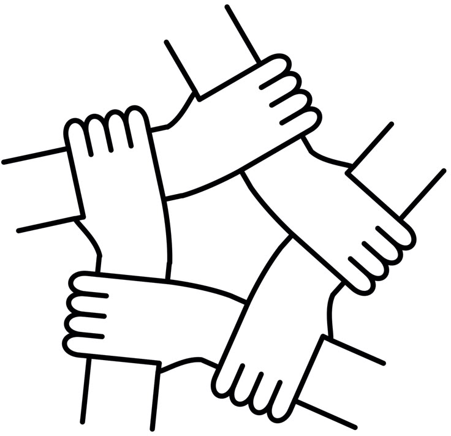

SMA İle Mücadelenizde Yalnız Değilsiniz

SMA Hastalığı Nedir?
Spinal Musküler Atrofi, yani kısaca SMA, kasları kontrol eden sinir hücrelerinin yavaş yavaş kaybıyla ortaya çıkan nadir bir genetik hastalıktır. Vücudumuzdaki kas hareketlerini sağlayan motor nöronlar, omurilikte bulunur ve beyin ile kaslar arasında iletişimi sağlar. SMA’da bu motor nöronlar zamanla zarar görür veya kaybolur. Bunun sonucu olarak kaslar güçsüzleşir ve küçülür.Hastalık genellikle doğuştan gelir veya erken çocuklukta başlar, ama bazı tipleri yetişkinlikte de görülebilir. Hastalığın belirtileri yaşa ve SMA tipine göre değişir. Bebeklerde görülen SMA tipleri genellikle çok erken yaşta ortaya çıkar ve bebek normal şekilde oturmak, emeklemek veya yürümek gibi hareketleri yapamayabilir. Daha hafif tiplerde ise hastalık genellikle çocukluk veya gençlik döneminde başlar ve yavaş ilerler. Kas zayıflığı, yürüme zorluğu, denge sorunları, ellerde ve kollarda güçsüzlük, nefes almayı zorlaştıran solunum problemleri en yaygın belirtilerdir. Bazı kişilerde ise sadece bacak kasları etkilenir ve günlük yaşam aktiviteleri daha uzun süre normal şekilde devam edebilir.

Belirtiler bireyler arası farklılıklar göstermekle birlikte; genellikle aşağıdaki şekillerde görülür.
- Kurbağa bacağı pozisyonunda yatma
- Dilde fasikülasyon
- Gevşek kas yapısı
- Azalmış kol-bacak hareketleri
- Azalmış derin tendon reflexleri
- Kuvvetsizlik
- Yürüyememe
- Solunum sistemi tutulması
- Beslenme bozuklukları
- Cılız ağlama
- Yaşıtlarından geride kalma, yavaş hareket etme
SMA’nın nedeni SMN1 genindeki mutasyonlardır. Bu gen, vücudun kasları çalıştırmak için gereken proteini üretir. SMN1 geni çalışmadığında veya eksik olduğunda, kasları kontrol eden motor nöronlar yeterince protein alamaz ve zamanla işle vini kaybeder. SMA kalıtsal bir hastalıktır; yani bir çocuğun SMA olması için her iki ebeveynden de genetik bir mutasyon alması gerekir. Bu durum, ailelerin bir sonraki çocuklarında da risk oluşturabileceği anlamına gelir. Hastalığın ilerleyişi kişiden kişiye değişir. Bazı çocuklar sadece bacak kasları veya kollarda zayıflık yaşarken, bazı larıdaha ciddi kas güçsüzlüğü ve solunum sorunlarıyla karşılaşabilir. Nefes almak ve yutmak gibi temel kas hareketleri etkilenirse, günlük yaşam ve beslenme konusunda destek gerekebilir. Günümüzde SMA için bazı tedaviler ve ilaçlar gelişt irilmiştir. Bu tedaviler, hastalığın ilerlemesini yavaşlatabilir veya bazı semptomları iyileştirebilir. Ayrıca fizik tedavi ve düzenli egzersiz, kas fonksiyonlarını korumaya yardımcı olabilir.
SMA ile yaşayan aileler ve hastalar için psikolojik destek de çok önemlidir. Sürekli bakım gerektiren bir durum olduğu için aileler hem hastayı hem de kendi sağlıklarını ve ruh hallerini korumak zorundadır. Destek grupları ve psikolojik danışmanlık, ailelerin duygusal yükünü hafifletebilir ve hastaların sosyal yaşamlarını sürdürmelerine yardımcı olabilir. Bu nedenle SMA sadece bir kas hastalığı değil, aynı zamanda aileleri ve çevresini etkileyen bir yaşam durumudur.